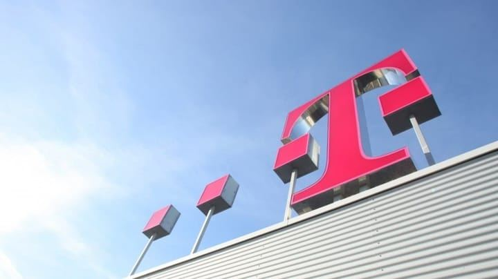
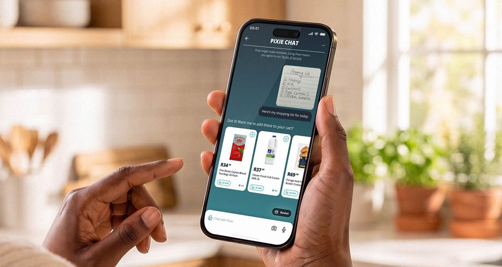
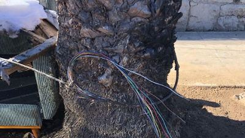

Ausgabe vom 14. August 2026
Alle Meldungen
Netz & Technik
Tarife & Angebote
 1GLOBAL empfiehlt Reise-eSIM als Kundenbindungs-Bonus
1GLOBAL empfiehlt Reise-eSIM als Kundenbindungs-Bonus
 Honor startet Gimbal-Smartphone mit Kamera-Video-Fokus
Honor startet Gimbal-Smartphone mit Kamera-Video-Fokus
Satellit & Direct-to-Cell
 Amazon-Satellit kostet in Südafrika so viel wie Glasfaser
Amazon-Satellit kostet in Südafrika so viel wie Glasfaser
 Starlink Roam bleibt in Polen verfügbar
Starlink Roam bleibt in Polen verfügbar
Regulierung & Politik
 Kabinett will Auskunftspflichten für Digitalfirmen erweitern
Kabinett will Auskunftspflichten für Digitalfirmen erweitern
Geld & Übernahmen
 Standard Bank meldet 72 Prozent aktive GenAI-Nutzer
Standard Bank meldet 72 Prozent aktive GenAI-Nutzer
Partnerschaften
 Free bündelt Disney+ Sportrechte ohne Aufpreis
Free bündelt Disney+ Sportrechte ohne Aufpreis
Vermischtes
Netz & Technik
12 Meldungen
Auch berichtet von TelecomTV, The Fast Mode, Telecoms.com, Mobile World Live

T-Mobile verkauft 800-Megahertz-Spektrum an InvestmentfirmaAuch berichtet von T-Mobile US, T-Mobile US, Fierce Network
Tarife & Angebote
12 Meldungen

Checkers' KI-Assistentin Pixie kann jetzt Unterhaltungen führen T-Mobile wirbt mit Studienstart-Ratgeber um junge Einzelkunden
T-Mobile wirbt mit Studienstart-Ratgeber um junge Einzelkunden
Auch berichtet von The Fast Mode
Satellit & Direct-to-Cell
4 Meldungen
Regulierung & Politik
9 Meldungen
Geld & Übernahmen
4 Meldungen
Partnerschaften
5 Meldungen
Vermischtes
12 Meldungen

Verizon setzt Belohnung gegen Netz-Vandalismus ausFrühere Ausgaben
14. August 2026
944 neue Meldungen
8. August 2026
256 neue Meldungen
7. August 2026
381 neue Meldungen
6. August 2026
642 neue Meldungen
5. August 2026
426 neue Meldungen
4. August 2026
124 neue Meldungen
31. Juli 2026
220 neue Meldungen
28. Juli 2026
9 neue Meldungen
27. Juli 2026
49 neue Meldungen
26. Juli 2026
4 neue Meldungen
25. Juli 2026
11 neue Meldungen
21. Juli 2026
185 neue Meldungen
20. Juli 2026
27 neue Meldungen
19. Juli 2026
233 neue Meldungen
17. Juli 2026
257 neue Meldungen
16. Juli 2026
1991 neue Meldungen